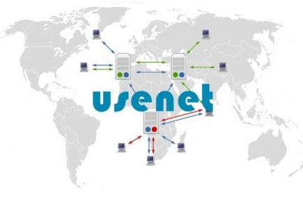

Notable Contributions
Perl is a family of two high-level, general-purpose, interpreted, dynamic programming languages.
A Unix program that updates text files according to instructions contained in a patch file

A newsreader is an application program that reads articles on Usenet distributed throughout newsgroups.